THIRUVANANTHAPURAM
Trivandrum (or Thiruvananthapuram) is the capital of the southern state of Kerala. The place is known for its idyllic beaches and rich culture because of which it draws tourists from all over the country. Trivandrum is also one of the cleanliest cities in India. Even after being the capital city and one of the most developed cities of the state it is still a far call from the maddening rush of the metropolitans. Hill stations, serene beaches, backwaters and lagoons make it an ideal holiday destination. The place is also well known for its diverse flora and fauna and is also a major attraction for medical tourists learning Ayurveda.
 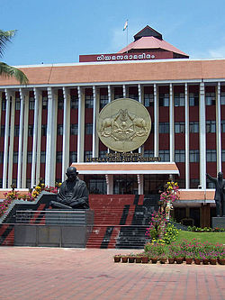
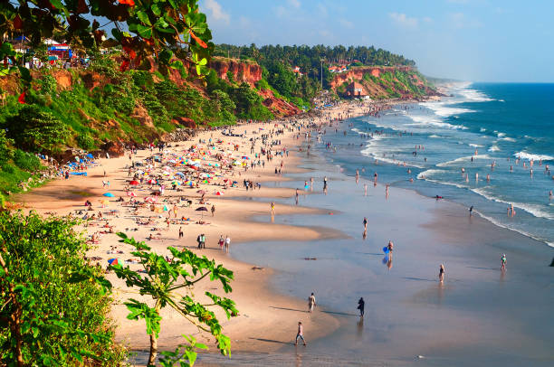
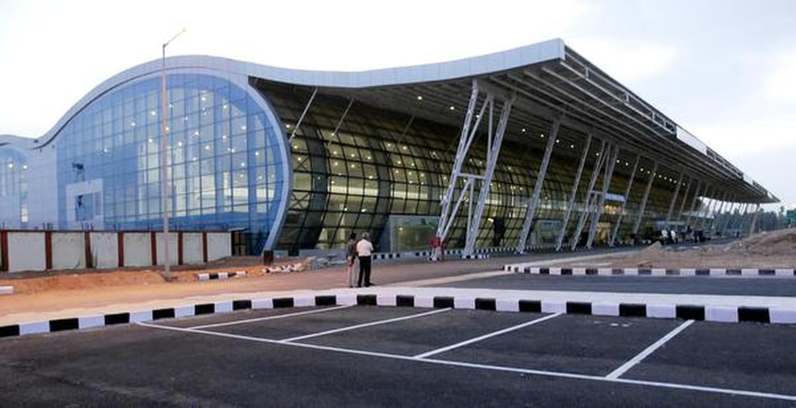
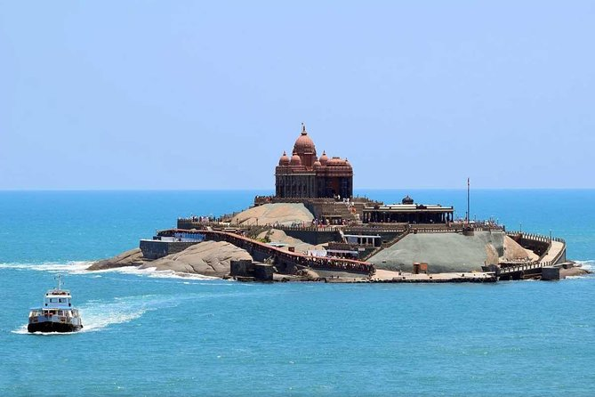
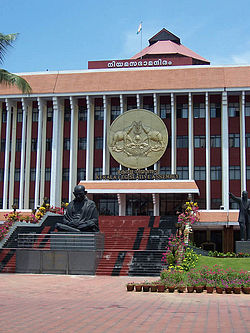
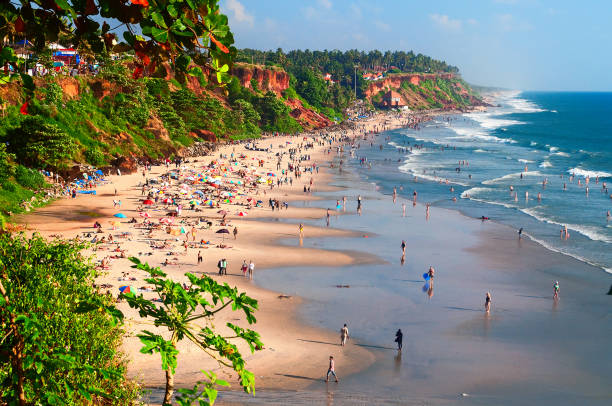
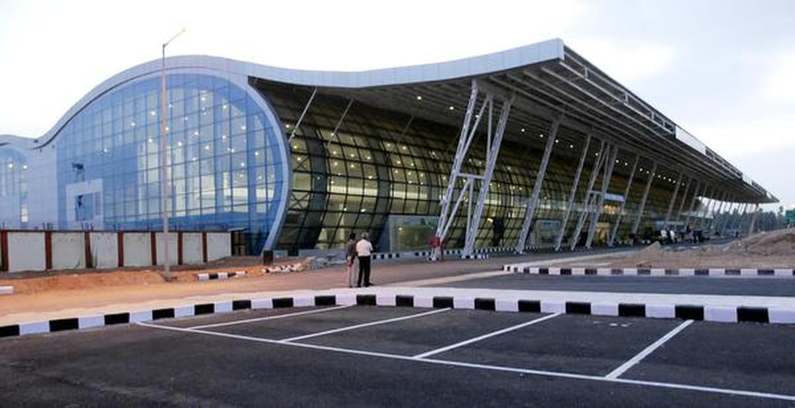
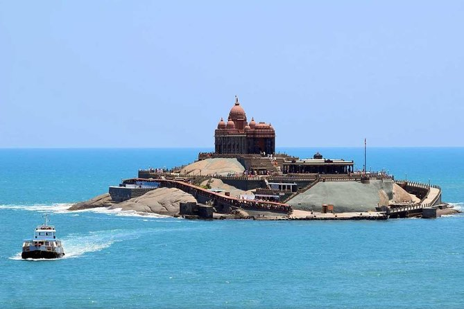
1. KOVALAM BEACH
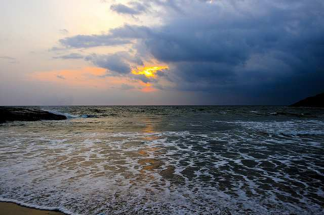
Being the most famous beach of Kerala, Kovalam beach surely is a prime attraction for the travellers. The swaying palm, a long coastline, a lighthouse on the shore, clear waters and far away horizon is the perfect description for this place. One can indulge into activities like sunbathing, snorkelling, catamaran rides and cycling on the beach. Admiring the beautiful sunsets and the losing them to the enchanting hues of the skies is an absolute delight for all beach lovers.
2. PATHMANABHASWAMY TEMPLE
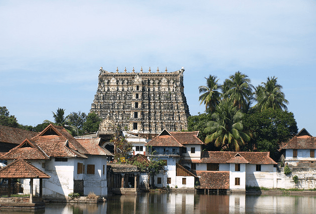
Padmanabhaswamy Temple, which is situated inside the East Fort in the heart of Trivandrum is dedicated to Lord Vishnu. The temple is famous for having the deity in the eternal sleep posture. It is also considered to be sacred by the Hindus who come to worship the deity all year long. Also known for being one of the 108 abodes of Lord Vishnu the temple is embellished by murals and stone carvings.
3. VARKALA BEACH
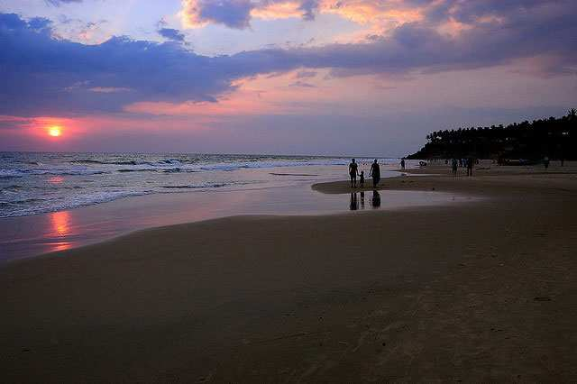
Unlike the Kovalam Beach, the Varkala Beach is quiet affair yet is popular amongst the travellers. The beach is famous for being under the cliff and offers a breath taking view of the Arabian Sea. With a temple in the vicinity there is a divinity in the air. The beach also has a quiet beach called the Black Beach famous for its black sands.
4. NAPIER MUSEUM
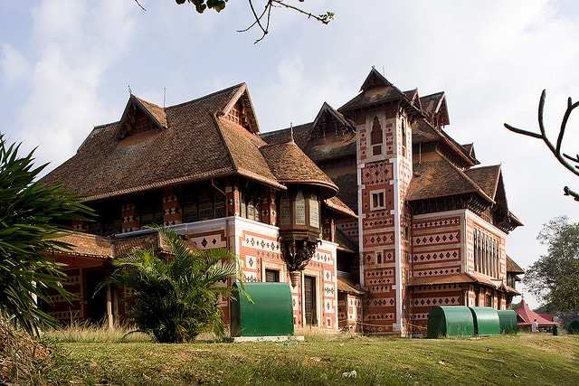
Named after a former British Governor (Lord Francis Napier) the Napier Museum is something you can’t afford to miss while in the city. With rare collections of bronze articles, antique musical instruments and ivory carvings, it is also known for its admirable architectural design. The museum also has Zoological Gardens and is known to be one of the well-planned zoos of Asia. The Botanical Garden also has all the species of tropical trees that exist.